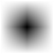
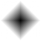
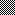
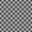
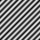
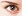
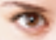

ImIn (Image interpolation)
Barycentric and bilinear image interpolation and transformation in pure Python
Overview
ImIn (Image Interpolation) module contains Python code for bilinear image interpolation and barycentric image interpolation, working in any color modes from 8 bit L to 16 bit RGBA (presumably it works in other color modes as well but I can't read and write CMYK files to perform testing). That is, it contains functions for reading single pixel at float coordinates, interpolated from real pixels (having integer coordinates), as well as functions for transforming whole image (scaling, rotating, deforming etc.) using interpolation methods above.
It is well known that image interpolation authors tend to increase image analysis area size. With bilinear interpolation, pixel is considered as square, and interpolation takes place between four corners. With bicubic interpolation, more neighbour pixels are added to analysis. This is good for smooth gradients but what about some sharp edges? What happens if, instead of adding more and more pixels, we try to use less than one pixel for interpolation? Why not to try using just half a pixel? For example, split a pixel square ⬛ diagonally into two triangles like ◤◢ or ◣◥, and use analysis within one half of a pixel using three corners?
Since I appeared to be unable to find such a triangular interpolation in any big programs like Photoshop or GIMP, I decided to write corresponding algorithm myself and see what happens.
It appears that the best coordinate system for triangles is barycentric coordinate system, which is widely used in science, in 3D graphics, sometimes used in 2D vector gradients, but, for unclear reasons, not used in regular 2D bitmap image processing.
It is easy to imagine barycentric interpolation within a triangle in some sort of perverted way:
- in a linear interpolation along a line, when calculating the value of fictional sample somewhere between two actual samples, the weight of actual sample is the higher the closer fictional sample is to that actual sample. Which, in turn, means that the weight of actual sample is the higher the farther apart from another actual sample our interpolated sample is, that is, the longer is the arm opposed to actual sample under discussion;
- similarly, in a bilinear interpolation within a square, the weight of any corner pixel is proportional to the area of rectangle, opposing this corner;
- so, similarly, in a barycentric interpolation within a triangle, the weight of any corner pixel is proportional to the area of triangle, opposing this corner.
As a result of enormous efforts to recall school math like rightangled triangle area I wrote my own barycentric interpolation code, which, after tedious debugging and implementing obvious optimization, appeared to give rather interesting results when used, for example, for image rescaling (I even tend to prefer it to Photoshop under some circumstances, regardless of the fact that Python code, even being optimized, and having caching (which, in my case, almost doubles the speed) on the top of it, is always slower than machine code in Photoshop).
Speaking of speed, on my not too new notebook barycentric upscaling of 1024×1024 px RGBA image ×5 times bigger (i.e., up to 5120×5120 px) takes ca. 3 minutes, which may be considered slow, until you take into account the fact that even at 300 ppi resolution (which means pretty good print quality must be assured to take any visible advantage of such a high resolution) resulting image will be noticeable larger than A3 paper sheet, that is, you are unlikely to need images of that size every day. Another fact to be taken into consideration is that Pythonic list representation of such an image simply ate all the RAM of my poor old notebook, making it use slow virtual one. So, on second though, imin implementation of interpolation algorithms is actually quite fast for a pure Python module.
At the same time I got bored by copying my own code for bilinear image interpolation from one program to another (yes, there is an interpolation in, say, POV-Ray 6³ Mosaic or img2mesh).
Finally, I decided to join my code for bilinear and barycentric image interpolation in some sort of a single module, which can be easily plugged into different image processing Python programs. And here it goes.
Дамы и господа! Ladies and gentlemen! Mesdames et messieurs! Señores y señoritas! Товарищи!
Let me introduce to you the one and only
Image Interpolation (imin) module,
combining simple yet carefully designed and even somewhat optimized bilinear and barycentric image interpolation in pure Python!
Let us perform a visual comparison of bilinear and barycentric image interpolation used for upscaling images of different nature.
Source |
Bilinear |
Barycentric |
|---|---|---|
|
3x3 px (black pixel over white background) |

x20 times |

x20 times |
| 
15x15 px (2x2 px chessboard pattern) |

x3 times |

x3 times |
| 
22x16 px |

x5 times |
x5 times |
Table 1 in this section contains various test cases. Obviously, bigger images like photos would be more interesting, but, unfortunately, to clearly see interpolation artifacts I should use at least x3 upscaling, so, if I use a photo that barely fits a screen as a source, result will not fit this web page.
In the first row, you may see a result of upscaling single black pixel over white background. Resulting images clearly show the difference between bilinear and barycentric interpolation.
In the second row, you see a potential problem case: a chessboard pattern. It's a problem for any interpolation: it's unclear what to find in there. Noise over flat color? A pattern? Should it be kept, suppressed, or emphasized?
As you can see, while bilinear interpolation simply blurs everything, barycentric interpolation tries to find diagonals. Quite likely, it's not what you want, but, on the other hand, a chessboard actually is a set of diagonals; any bishop, whether he's black or white, will confirm this.
(Needless to say, if you want a pixel-sized black and white chessboard to be treated as black and white chessboard, you better resort to ScaleNx image rescaling.)
In the third row, you see a small fragment of a photo. It seems like barycentric interpolation gives clearer appearance of overall eye outline shape; rhomb-shaped pupil, however, looks a bit weird. But well, pupil occupies just one pixel in original, so result looks similar to a rhomb in the first row example.
Module and example programs
Currently default branch is "Functional", bearing this name because it is supposed to be used as functions, not a class. Corresponding class equivalent is under development, and supposed to be published later.
Module content is briefly summarized below.
- __init__.py: This is not just an init file. Actually, it contains all code required to read image pixel at float coordinates, interpolated from surrounding pixels using either barycentric or bilinear method. If reading image pixels is all you need, you may copy __init__.py file alone and use it for your applications. Remember that I don't give a care to legal stuff, so you can use my code for free, completely or partially, and modify at will.
- displace.py: General purpose image displacement using either barycentric or bilinear interpolation. Exact type of displacement is controlled by fx(x, y) and fy(x, y) functions, given to displace as arguments.
- rescale.py: Image rescaling. Obviously, image rescaling is a specific case of displacement, and can be done with displacer, but specific case of rescaling gives a chance to add some specific speed optimization; therefore a separate code was created.
Detailed functions description and parameters for developers are given in a rather prolific docstrings.
Surely, during development module needs testing. Therefore some GUI shell programs were created for testing and illustration purposes:
- distorter.py: the main part of demo. Distorter provides examples of general purpose image displacer (displace.py above) usage. Currently demo includes just a few functions:
- skewing (tangent based);
- wavy distortion (sine based);
- a couple of toothy distortions (both based on modulo).
- mdbiggener.py: image rescaler; provides a demo for rescale.py;
- revolver.py: image rotation program. Based entirely on displace.py, and separated as specific program just because rotation GUI should take only one argument (i.e. angle), while displacement currently takes two (one for x and other for y). To avoid making a general program with only half of GUI being functional, this particular example program was created.
All the final public functions, included into imin module and intended for actual use, have a rather generalized access scheme. For example, a single interpolated pixel with float x and y coordinates may be acquired like this:
pixel_value = pixel(source_image, x, y, edge, method)
where:
- pixel_value: pixel as list of channel values, e.g. [R, G, B];
- source_image: source image as nested 3D list (e.g., obtained by reading PPM file using PyPNM);
- x, y: pixel coordinates (not surprisingly);
- edge: edge extrapolation mode, either repeat edge (like Photoshop in most cases), or filling with zeroes (like Photoshop in least cases), or wrap around processing (which is good for seamless textures and which Photoshop, for unknown reason, practically do not support);
- method: interpolation method, either bilinear or barycentric.
Such a generalized syntax simplifies using imin module for writing image editing programs.
Note, however, that, while "Wrap around" mode is present in sample programs GUI, it does't always work as one may expect.
Imagine simple horizontal skewing, when top and bottom edges move against each other, and right and left ones become sort of diagonals. Assume that the source image is seamless pattern. With "Wrap" mode enabled, distorter.py keeps the horizontal part seamless, that is, the triangular part of image that goes away at the right side will appear at the left. What as to vertical part, since top and bottom edges move against each other, their match gets broken and seam formed.
However, if you switch from skewing to sine wave distortion, result of deforming a seamless pattern will be seamless. That's because I use exactly one wave cycle for a displacing function, making ends meet (literally). Well, actually, even with non-seamless sources, in case of sufficient deformations this function deforms edges so much that they become unrecognizable, and image turns into seamless-like (is this a real word?).
Now it's time to either step forward to Bilinear and barycentric image interpolation code repository at GitHub for downloads...
...or Move back to Dnyarri`s Python freeware main page.